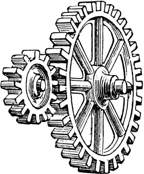

SYSTEME
"Pour comprendre un système, il faut. . . s'en extraire" Bernard WERBER
La démarche systémique procède d’un regard particulier sur la réalité sociale par une conception synthétique et non pas analytique d’une situation donnée. Le postulat de départ de la systémie réside dans le fait qu’une grande partie des difficultés ou troubles d’une personne s’origine dans une pathologie de l’ensemble des relations et des processus de communication. La systémie est donc le fruit de rencontres interdisciplinaires appliquées aussi bien aux systèmes mécaniques qu’aux relations humaines.
La systémie ne s’attache pas directement au symptôme mais tente d’identifier et de modifier le contexte dans lequel il s’inscrit. Cette approche se valorise de façon majeure par la prise en compte du symptôme, pris ici comme un message, un indicateur mesurable dans le système de communication du sujet.
Tout y est porteur de sens. Toutes les actions, tous les comportements sont considérés comme des entrées apportant ainsi une modification à l’ensemble des relations du groupe ( couple, famille, amis, collègue, etc.). Le principe de totalité induit que le comportement de chaque membre est lié aux comportements de tous les autres et en dépend directement.
Cette approche considère que l’individu fait partie d’un système, voire de plusieurs systèmes. Et qu’il est influencé dans sa façon d’être, aussi bien par lui-même que par les autres et son environnement. La perspective systémique voit les blocages du sujet sous l’angle de la relation avec les différents contextes dans lesquels il vit : c’est-à-dire par exemple comme partenaire dans une relation de couple, comme membre d’une famille, comme personne avec des valeurs propres à une culture et/ou une religion… comme individu évoluant dans tel contexte socio-économique et politique…
Ainsi, pour mieux comprendre et faire évoluer les problèmes du sujet dans son présent, l'hypnologue s’intéresse à son contexte de vie au sens large. Il considère aussi que la personne, au moment présent, est le produit de tous ses apprentissages antérieurs. Et pour cela, l'hypnologue fait en sorte de reconnaître le passé dans l’identité actuelle de la personne, mais en essayant de modifier les conséquences négatives des expériences passées qui créent en partie les difficultés actuelles. Cela implique une forme d'attention aux aspects émotionnels mais aussi cognitifs des difficultés vécues par le sujet, et également aux émotions et réactions de son entourage.
La systémie ne s’attache pas directement au symptôme mais tente d’identifier et de modifier le contexte dans lequel il s’inscrit. Cette approche se valorise de façon majeure par la prise en compte du symptôme, pris ici comme un message, un indicateur mesurable dans le système de communication du sujet.
Tout y est porteur de sens. Toutes les actions, tous les comportements sont considérés comme des entrées apportant ainsi une modification à l’ensemble des relations du groupe ( couple, famille, amis, collègue, etc.). Le principe de totalité induit que le comportement de chaque membre est lié aux comportements de tous les autres et en dépend directement.
Cette approche considère que l’individu fait partie d’un système, voire de plusieurs systèmes. Et qu’il est influencé dans sa façon d’être, aussi bien par lui-même que par les autres et son environnement. La perspective systémique voit les blocages du sujet sous l’angle de la relation avec les différents contextes dans lesquels il vit : c’est-à-dire par exemple comme partenaire dans une relation de couple, comme membre d’une famille, comme personne avec des valeurs propres à une culture et/ou une religion… comme individu évoluant dans tel contexte socio-économique et politique…
Ainsi, pour mieux comprendre et faire évoluer les problèmes du sujet dans son présent, l'hypnologue s’intéresse à son contexte de vie au sens large. Il considère aussi que la personne, au moment présent, est le produit de tous ses apprentissages antérieurs. Et pour cela, l'hypnologue fait en sorte de reconnaître le passé dans l’identité actuelle de la personne, mais en essayant de modifier les conséquences négatives des expériences passées qui créent en partie les difficultés actuelles. Cela implique une forme d'attention aux aspects émotionnels mais aussi cognitifs des difficultés vécues par le sujet, et également aux émotions et réactions de son entourage.

Le sujet n’est donc pas le seul valorisé dans son accompagnement thérapeutique. Cette approche considère que toute personne est construite à partir de son histoire, qui englobe aussi l’histoire des autres systèmes dont elle dépend comme sa famille, et ce, parfois, sur plusieurs générations. Ses intentions, ses valeurs, celles aussi des autres, sont conditionnées par son environnement, qu’il soit proche ou plus élargi.
Ainsi, un événement (symptomatique) peut être considéré comme une régulation du fonctionnement du système concerné, comme c’est souvent le cas au sein d’une famille. Et au lieu de désigner un "mouton noir", de vouloir pointer une possible pathologie et/ou comportement destructeur et/ou situation négative d’un des acteurs du système, l’approche systémique met en avant l’idée qu’un système s’organise, fonctionne, se régule en fonction des interactions et à partir des règles, explicites et implicites, qui s’y créent. Les dysfonctionnements d’une personne pouvant alors se lire comme un effet de ces régulations.
Le symptôme peut être ainsi vu comme un mode d’adaptation à une structure systémique toxique ou pathologique.
La lecture systémique supplémentée par l'approche Ericksonienne multiplie les possibles, et montre comment il existe souvent plusieurs façons de réagir adéquates, les possibilités d’action se situant au niveau de tous les acteurs.
Ainsi, un événement (symptomatique) peut être considéré comme une régulation du fonctionnement du système concerné, comme c’est souvent le cas au sein d’une famille. Et au lieu de désigner un "mouton noir", de vouloir pointer une possible pathologie et/ou comportement destructeur et/ou situation négative d’un des acteurs du système, l’approche systémique met en avant l’idée qu’un système s’organise, fonctionne, se régule en fonction des interactions et à partir des règles, explicites et implicites, qui s’y créent. Les dysfonctionnements d’une personne pouvant alors se lire comme un effet de ces régulations.
Le symptôme peut être ainsi vu comme un mode d’adaptation à une structure systémique toxique ou pathologique.
La lecture systémique supplémentée par l'approche Ericksonienne multiplie les possibles, et montre comment il existe souvent plusieurs façons de réagir adéquates, les possibilités d’action se situant au niveau de tous les acteurs.
EN RELATION


TRAHISON
TRANSE MUER
TRANSE GENERATION
CROYANCE
REPARATION
REPETITION